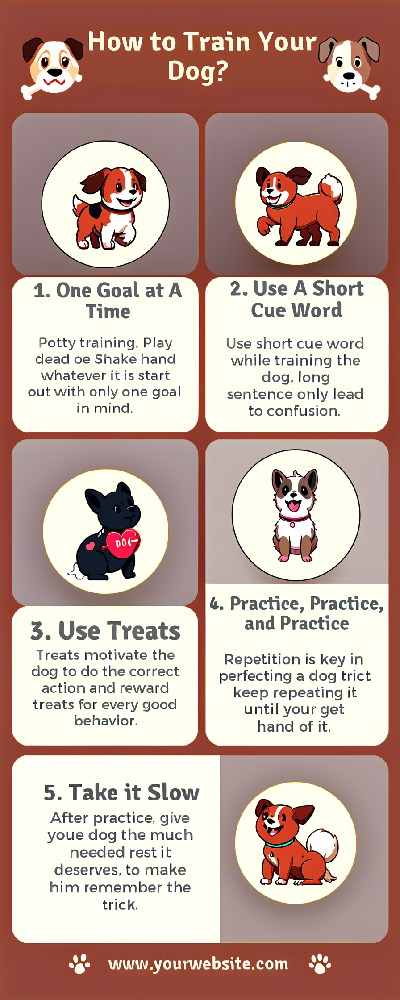
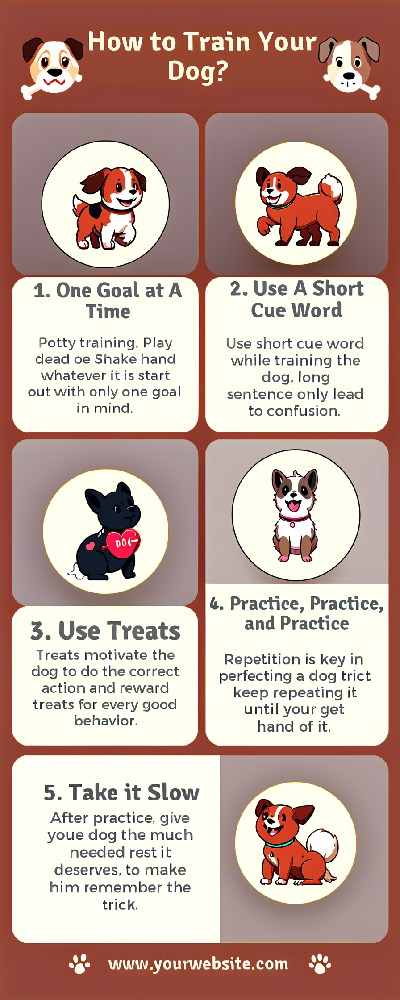

BizGen: Advancing Article-level Visual Text Rendering for Infographics Generation
Generated Infographics
 

Generated Slides
Abstract
Recently, state-of-the-art text-to-image generation models, such as Flux and Ideogram 2.0, have made significant progress in sentence-level visual text rendering. In this paper, we focus on the more challenging scenarios of article-level visual text rendering and address a novel task of generating high-quality business content, including infographics and slides, based on user provided article-level descriptive prompts and ultra-dense layouts. The fundamental challenges are twofold: significantly longer context lengths and the scarcity of high-quality business content data.
In contrast to most previous works that focus on a limited number of sub-regions and sentence-level prompts, ensuring precise adherence to ultra-dense layouts with tens or even hundreds of sub-regions in business content is far more challenging. We make two key technical contributions: (i) the construction of scalable, high-quality business content dataset, i.e., Infographics-650K, equipped with ultra-dense layouts and prompts by implementing a layer-wise retrieval-augmented infographic generation scheme; and (ii) a layout-guided cross attention scheme, which injects tens of region-wise prompts into a set of cropped region latent space according to the ultra-dense layouts, and refine each sub-regions flexibly during inference using a layout conditional CFG.
We demonstrate the strong results of our system compared to previous SOTA systems such as Flux and SD3 on our BizEval prompt set. Additionally, we conduct thorough ablation experiments to verify the effectiveness of each component. We hope our constructed Infographics-650K and BizEval can encourage the broader community to advance the progress of business content generation.
Scalable Data Engine
Layout-Guided Cross Attention
Layout Conditional CFG
Local region quality accessment pipeline
Generation Quality Compare
BibTeX
@article{peng2025bizgen,
title={BizGen: Advancing Article-level Visual Text Rendering for Infographics Generation},
author={Peng, Yuyang and Xiao, Shishi and Wu, Keming and Liao, Qisheng and Chen, Bohan and Lin, Kevin and Huang, Danqing and Li, Ji and Yuan, Yuhui},
journal={arXiv preprint arXiv:},
year={2025},
}
@article{liu2024glyphv2,
title={Glyph-ByT5-v2: A Strong Aesthetic Baseline for Accurate Multilingual Visual Text Rendering},
author={Liu, Zeyu and Liang, Weicong and Zhao, Yiming and Chen, Bohan and Li, Ji and Yuan, Yuhui},
journal={arXiv preprint arXiv:2406.10208},
year={2024}
}
@article{liu2024glyph,
title={Glyph-byt5: A customized text encoder for accurate visual text rendering},
author={Liu, Zeyu and Liang, Weicong and Liang, Zhanhao and Luo, Chong and Li, Ji and Huang, Gao and Yuan, Yuhui},
journal={arXiv preprint arXiv:2403.09622},
year={2024}
}